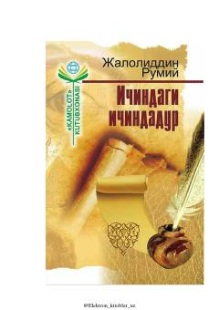

IIInsonning o'zligini anglashiga va ma'naviy kamolotga erishishiga yo'l ko'rsatuvchi falsafiy asar.
Ushbu asar Jaloliddin Rumiyning falsafiy-ma'rifiy qarashlarini o'zida mujassam etgan bo'lib, insonni o'zligini anglashga va Haqni tanishga chorlaydi. Kitob inson ruhiyati, nafs tarbiyasi hamda ruh va jism o'rtasidagi muvozanat masalalarini chuqur hikmatlar orqali tahlil qiladi.